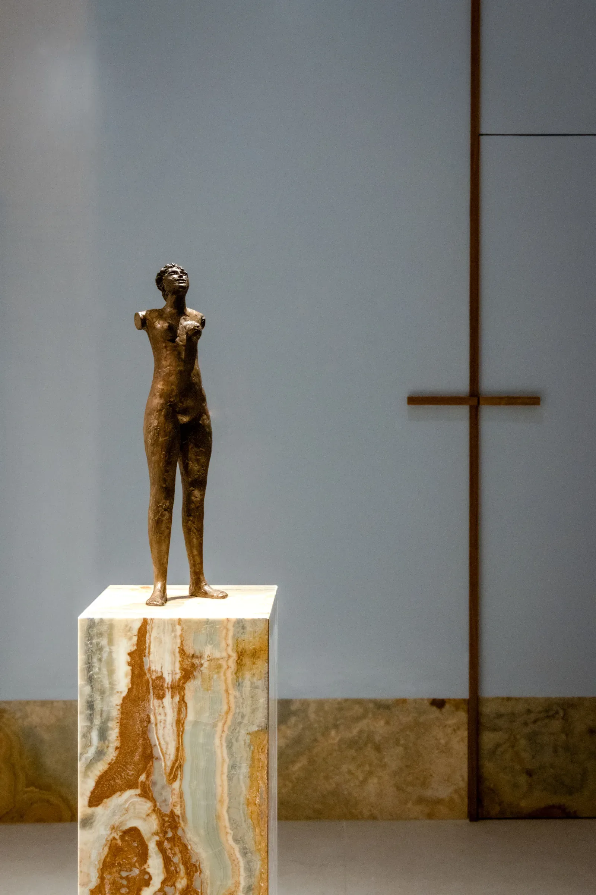

Progettare in un contesto storico, dalla città allo spazio domestico

Un intervento in un edificio storico non comincia dalla stanza da ristrutturare. Comincia dalla città: dalla strada, dall'isolato, dalla storia dell'edificio. Solo dopo si arriva allo spazio domestico.
Leggere la città
Ogni centro storico ha un proprio ordine: la trama delle strade, i portici, i cortili, il ritmo delle facciate, i materiali e i colori ricorrenti. A Modena il centro si sviluppa intorno al Duomo e a Piazza Grande, patrimonio UNESCO dal 1997, e lungo strade come Corso Canalgrande. Capire questo ordine aiuta a capire anche l'edificio: perché le stanze hanno quelle altezze, perché le finestre sono disposte così, quali parti sono state aggiunte nel tempo.
Leggere l'edificio
Il rilievo è il momento in cui l'edificio si lascia conoscere: murature, solai, volte, decorazioni, pavimenti. Serve a distinguere ciò che ha valore e va conservato da ciò che può essere trasformato. Spesso le tracce più interessanti emergono proprio qui, e diventano il punto di partenza del progetto.
Conservare e aggiungere
In un contesto storico il nuovo non deve imitare l'antico, ma dialogare con esso. Gli elementi aggiunti possono essere chiaramente contemporanei, riconoscibili per forma, colore e materiale, e lasciare leggibile ciò che c'era prima. È un principio del restauro che vale anche alla scala di un appartamento.
Nel progetto di via Carteria, a Modena, il soffitto decorato esistente viene conservato, mentre colonne rosse e un volume blu, elementi nuovi e riconoscibili, organizzano il corridoio e le funzioni della casa. Lo stesso appartamento viene diviso in due abitazioni con due identità diverse, una per ciascuna committenza.
Fino allo spazio domestico
L'ultima scala è quella di chi abita: un ingresso, un armadio, un tavolo, la luce di una lampada. Qui il progetto diventa dettaglio costruttivo e arredo su misura, e il rapporto con la storia si gioca nelle scelte più piccole: un colore che risponde a una decorazione antica, un materiale accostato a un pavimento originale. In Anita, in Corso Canalgrande, pochi volumi in onice bastano a dare carattere alla sala.
Un metodo
Dalla città allo spazio domestico, il metodo resta lo stesso: ascoltare il luogo e chi lo abiterà, capire prima di trasformare, aggiungere con chiarezza. È l'approccio con cui lo studio affronta ogni intervento in centri storici e siti UNESCO.